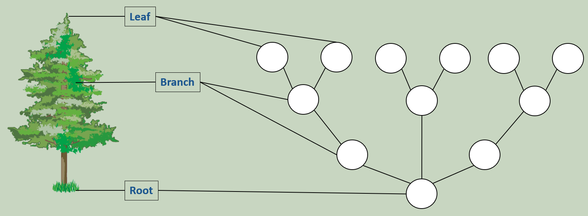
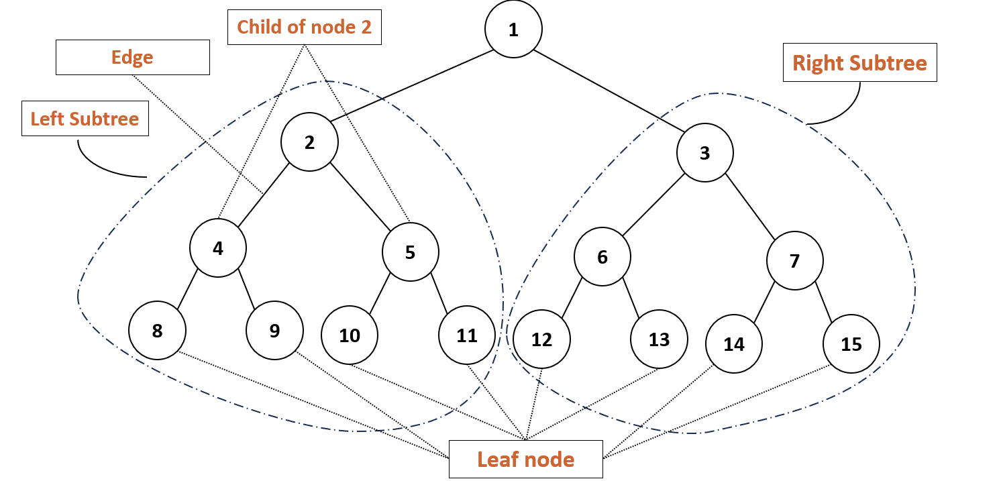

Tree
A tree data structure is a hierarchical structure that consists of nodes connected by edges. It is a widely used abstract data type that simulates a hierarchical tree structure, with a root value and subtrees of children, represented as a set of linked nodes. Here are some key features and definitions related to trees:

Binary Tree:
A binary tree is a type of tree data structure in which each node has at most two children, referred to as the left child and the right child.
Key Properties of BST
- Left Subtree: The value of each node in the left subtree is less than the value of the parent node.
- Right Subtree: The value of each node in the right subtree is greater than the value of the parent node.
- No Duplicates: Generally, BSTs do not allow duplicate values, but they can be modified to allow duplicates either on the left or right subtree.
- Recursion: BSTs use recursion in their traversal, insertion, and deletion operations.
Operations on a BST
- Search:
- To search for an element, start at the root and recursively traverse the tree.
- If the element is smaller than the current node’s value, move to the left subtree; if larger, move to the right subtree.
- Time Complexity: O(log n) on average (O(n) in the worst case).
- Insertion:
- To insert a new element, follow the same logic as in the search operation. Find the correct position where the new element should go and insert it as a leaf node.
- Time Complexity: O(log n) on average (O(n) in the worst case).
- Deletion:
- Deletion can be handled in three cases:
- Leaf Node: Simply remove the node.
- Node with One Child: Replace the node with its single child.
- Node with Two Children: Find the node’s in-order successor (the smallest node in the right subtree) or in-order predecessor (the largest node in the left subtree), replace the node with that value, and delete the successor/predecessor.
- Time Complexity: O(log n) on average (O(n) in the worst case).
- Deletion can be handled in three cases:

Traversal Techniques
- In-Order Traversal:
- Traverse the left subtree, visit the node, and then traverse the right subtree. This results in the values being accessed in ascending order.
- Order: Left → Root → Right
- Pre-Order Traversal:
- Visit the node first, then traverse the left subtree and right subtree.
- Order: Root → Left → Right
- Post-Order Traversal:
- Traverse the left subtree, right subtree, and then visit the node.
- Order: Left → Right → Root
- Level-Order Traversal (Breadth-First):
- Traverse the tree level by level from the root to the leaves. This is typically implemented using a queue.